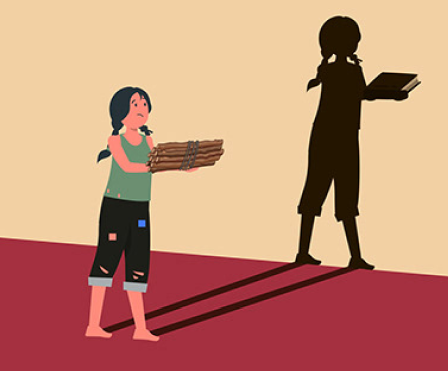

A desigualdade social no Brasil é resultado de diversos fatores históricos, econômicos e sociais.
O sistema tributário regressivo, que sobrecarrega os mais pobres com impostos enquanto alivia as
classes mais altas, contribui para aprofundar as disparidades econômicas. Além disso, o acesso
limitado à educação de qualidade dificulta a mobilidade social e perpetua o ciclo de pobreza.
Baixos apoios, aliados à maior distribuição de benefícios econômicos, concentram a riqueza nas mãos de
poucos, agravando a exclusão social. Esse cenário reflete também o legado de colonização e escravidão,
que estruturou uma sociedade desigual e marginalizou grupos negros e indígenas.
A concentração de terras e a falta de uma reforma agrária eficaz completaram esse quadro, impedindo
o desenvolvimento econômico de comunidades rurais e pequenos agricultores. Esses elementos juntos perpetuam
a desigualdade, exigindo ações urgentes para promover a justiça social no país.
Consequências:
A desigualdade leva ao aumento da pobreza, da má qualidade da alimentação e à fome. Com isso,
também há más condições de moradia, falta de saneamento básico, saúde precária, alta taxa de
mortalidade infantil, violência e desemprego. Concomitante a todos esses fatores, há estresse
e outros problemas psicológicos. Em 2019, o Brasil ocupou a sétima posição entre os países
mais desiguais do mundo no relatório mundial do Programa das Nações Unidas para Desenvolvimento
(Pnud). A diretora da Oxfam Brasil, destaca que há três principais fatores determinantes fazendo
com que o país permaneça nessa posição negativa: O racismo A questão de gênero A tributação desigual
de impostos, que acaba pesando muito mais sobre a população mais pobre.

Coenficiente de Gini:
Em 2023, apesar do aumento do rendimento médio per capita dos agregados familiares em todos os
estratos, a desigualdade permaneceu pronunciada no país. O índice de Gini do rendimento familiar
mensal real per capita manteve-se em 0,518, o mais baixo da série histórica e o mesmo valor de 2022.